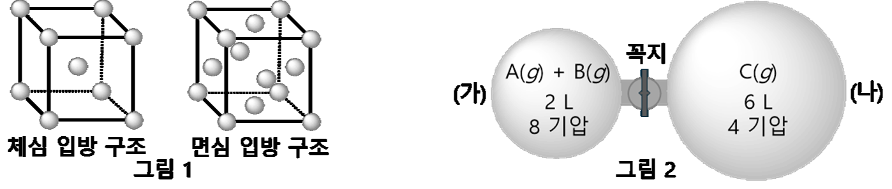
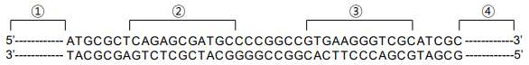

문제 2
<제시문 1> 유전자로부터 형질이 표현되기까지의 과정을 유전자 발현이라고 하며, 그 첫 단계는 DNA에 저장되어 있던 유전 정보가 mRNA로 옮겨지는 전사 과정이다. 전사는 프로모터라고 하는 DNA의 특정 염기 서열에 RNA 중합효소가 결합하면서 시작된다.
<제시문 2> mRNA 상에 3개의 염기로 이루어진 유전 암호를 코돈이라고 한다. 코돈 중 AUG는 개시 코돈이며, UAA, UAG, UGA는 종결 코돈이다. tRNA는 mRNA의 코돈과 상보적으로 결합할 수 있는 안티코돈을 가지고 있다. 리보솜에는 tRNA가 결합할 수 있는 A, P, E 자리가 있다.

1-1
위 두 가닥의 염기 서열은 10개의 아미노산으로 이루어진 단백질을 암호화하고 있는 유전자를 나타낸 것이다. 위 염기 서열에서 프로모터의 위치는 ①~④ 중에서 어디인지 답하고 그 근거를 제시하시오.
1-2
위 유전자에 암호화되어 있는 10개의 아미노산 중 3번째 아미노산을 공급하는 tRNA가 가지고 있는 안티코돈 서열을 5'에서 3' 순서대로 답하시오.
1-3
유전자 발현에 대한 다음 ㉮~㉱ 설명 중에서 잘못된 것을 모두 골라서 틀린 부분을 설명하시오.

㉮ 아미노산을 결정하는 유전부호는 동물과 식물에서 동일하다.
㉯ 거친면 소포체의 표면에서는 리보솜에 의한 단백질 합성이 일어난다.
㉰ 아미노산이 연결되어 폴리펩타이드를 만들 때 아미노산과 아미노산은 수소결합에 의해 서로 연결된다.
㉱ 리보솜의 A 자리에 개시 코돈이 위치하면서 단백질 합성이 시작된다.